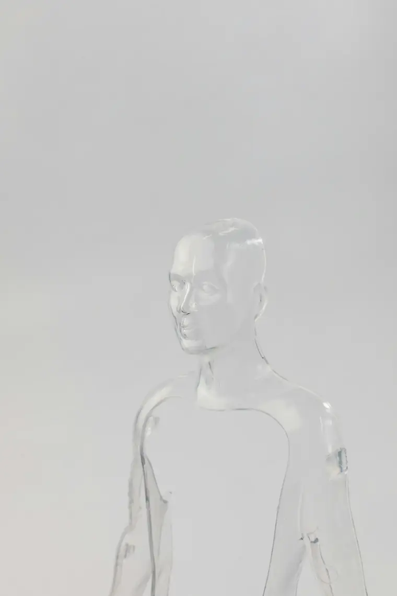
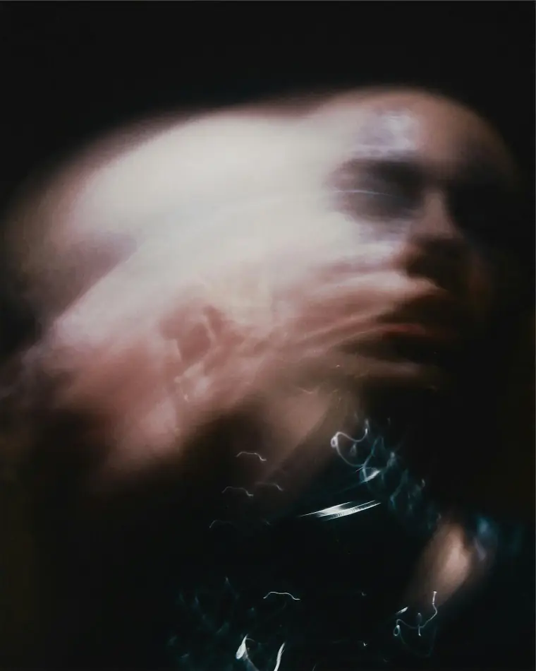

Proyectos / 02 — TECH
Gabinete — IA
Engineering Digital Authority
La inteligencia artificial no es una respuesta; es un organismo vivo.
No uso un chat. Uso un ecosistema, y sigue vivo cuando cierro la ventana.
Hoy son dos piezas.
Grok Bot — donde los agentes trabajan.
Notion — donde la evolución se almacena.
Sin las dos, sería otra ventana que se olvida al cerrarse.
I. EL GABINETE
Diseñé mi gabinete contra la generalidad. Mientras el mercado usa la IA de forma reactiva, yo he construido una infraestructura basada en la memoria.
No es una sola voz. Es una red de oficios
— estrategia | derecho | datos | mercado | inglés | arquitectura | voz. Cada uno tiene un prompt propio, escrito y guardado, no improvisado en el hilo.
Si no nombro a nadie, responde quien dirige. Reparte, reúne y cierra. Yo decido. Una instrucción mía anula cualquier protocolo.
II. LO QUE NO DEJO A LA SUERTE
La calidad no está en el modelo. Está en lo que no dejo a la suerte.
Hay skills. Un proceso que se repite deja de vivir en mi cabeza y pasa a tener nombre — activar una figura, delegar, repartir el esfuerzo, escribir un prompt. Se ejecuta igual la segunda vez que la primera. Misión, evidencia, tono y límite.
La memoria vive en Notion, no en la conversación. Lo que se decide queda fechado — una sesión, una decisión, un activo. La siguiente vez se lee en un orden fijo, antes de opinar. Por eso no empieza de cero, y por eso no reabre lo que ya cerré.
Hay rutinas que corren solas. El sistema trabaja cuando la conversación ya terminó. Tareas rutinarias quedan automatizadas — el correo, la agenda, lo que se mueve en el sector.
III. LO QUE HA SALIDO DE AQUÍ
Actualmente ha evolucionado. Tengo a mi disposición un grupo de especialistas que no solo me asesoran en aspectos materiales, sino significativos y trascendentales. Tech + Heart, en el mismo sitio.
Nada de esto se ha hecho solo. La IA propone, ordena y no olvida. La palabra, el criterio y la dirección son míos. Una misión significativa no sale de un prompt.
De aquí ha salido trabajo concreto, y lo he cerrado yo.
LinkedIn — supervisado y asesorado creativamente.
Web — personal, y otros portfolios.
Notion — el legado, los cimientos, y el camino de estos meses. Pasado, presente y futuro.
Diseñé agentes de IA aplicada al estudio, obteniendo sobresaliente en diversas asignaturas.
… y mucho más.
IV. MÁS
La materialización de mi pilar Tech — un cerebro externo que guía, pero no encadena.
La innovación deja de ser una promesa para convertirse en la normalidad.
Es la infraestructura con la que pienso. No la que piensa por mí.

01/03 
02/03 03/03